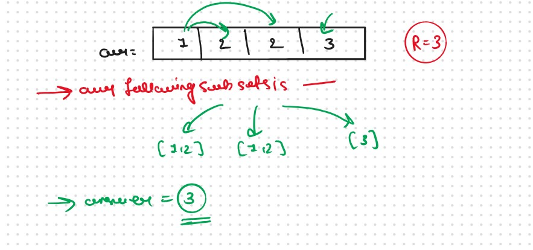
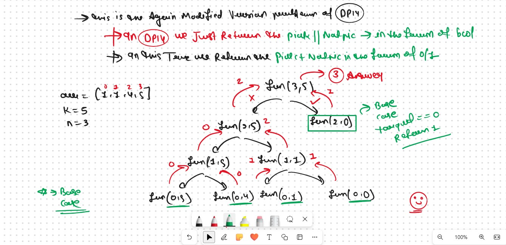
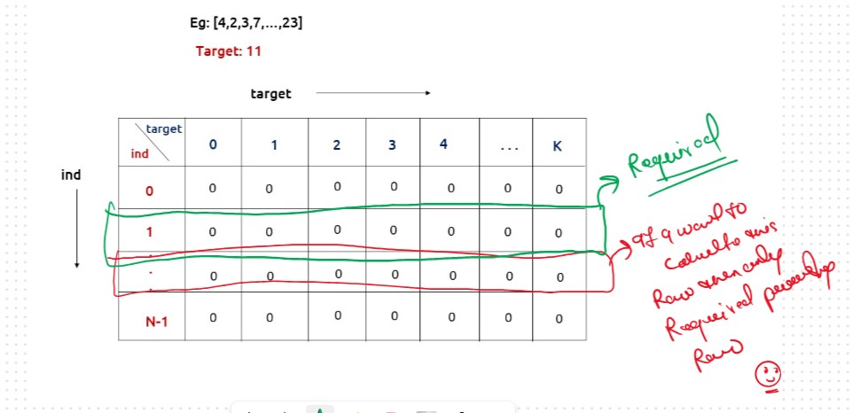

JB TAK FODEGA NHI .... TB TK CHODEGA NHI .... (MAANG)


DPL17 Count Subsets with Sum K
We are given an array ‘ARR’ with N positive integers and an integer K. We need to find the number of subsets whose sum is equal to K.
Basically This Problem is the UpDated Varient of the DPL14 in DPL14 we Just Return the True of False if the any Subset Present or Not that is == k but in this Problem We Count All the Subsets that Sum is == k
Here is the Only Few Changes that we Do in this ProblemIn DPL14
In DPL17
Now remaining Entire üëá Process will Be Same As Like in DPL14
Recursice Approch
Steps to form the Recursive SolutionStep 1: Express the problem in terms of indexes.
So, we can say that initially, we need to fun(n-1, target) which means that we need to find whether there exists a subsequence in the array from index 0 to n-1, whose sum is equal to the target. Similarly, we can generalize it for any index ind as follows:
The Recursive Function is
Step 2: Try out all possible choices at a given index.
We need to generate all the subsequences. We will use the pick/non-pick technique as discussed in, That we All Ready Learn in the Recursion Series.
We have two choices:Note: We will consider the current element in the subsequence only when the current element is less or equal to the target.
The final pseudocode after steps 1, 2, and 3:

Recursion Tree 
.png)
.png)
Sb Mai He Kru ...
Khud Bhi Kr le Khuch ..... Nalayk
Time & Space Complexity
Time Complexity: O(2^N)Reason: Exponential Time we find out the all the Possible Path
Space Complexity: O(N)
Reason: We are using a recursion stack space(O(N))
Memoization Approch
If we observe in the recursion tree, we will observe a many number of overlapping subproblems. Therefore the recursive solution can be memoized for to reduce the time complexity.
Steps to convert Recursive code to memoization solution:
.png)
.png)
Sb Mai He Kru ...
Khud Bhi Kr le Khuch ..... Nalayk
Time & Space Complexity
Time Complexity:O(N*K)Reason: There are N*K states therefore at max ‘N*K’ new problems will be solved.
Space Complexity: O(N*K) + O(N)
Reason: We are using a recursion stack space(O(N)) and a 2D array ( O(N*K)).
Tabulation Approch
Tabulation is a ‘bottom-up’ approach where we start from the base case and reach the final answer that we want and Memoization is the Top-down Approch.In Tabulation Approch We Just Creat a DP Array Same as Memoization and Simply Convert the Recurance Relation into the form of the Looping
Steps to convert Recursive Solution to Tabulation one.To convert the memoization approach to a tabulation one, create a dp array with the same size as done in memoization. We can initialize it as 0.
.png)
.png)
Sb Mai He Kru ...
Khud Bhi Kr le Khuch ..... Nalayk
Time & Space Complexity
Time Complexity: O(N*K)Reason:There are 2 nested loops
Space Complexity: O(N*K)
Reason: We are using an external array of size ‘N*K’’.
Space Optimization
If we closelly Observed if any Tabulation Approch we used the Some Limited Stuff like: dp[ind][target] = dp[ind-1][target] || dp[ind-1][target-arr[ind]] for the finding the our ans then definetly here Spaced Optimization is Possible in that types of Problems. Always Remember
Golden Rule
.png)
.png)
Sb Mai He Kru ...
Khud Bhi Kr le Khuch ..... Nalayk
Time & Space Complexity
Time Complexity:O(N*K)Reason: There are three 2 nested loops
Space Complexity: O(K)
Reason: We are using an external array of size ‘K+1’ to store only one row.